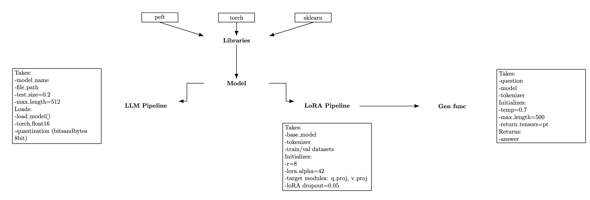
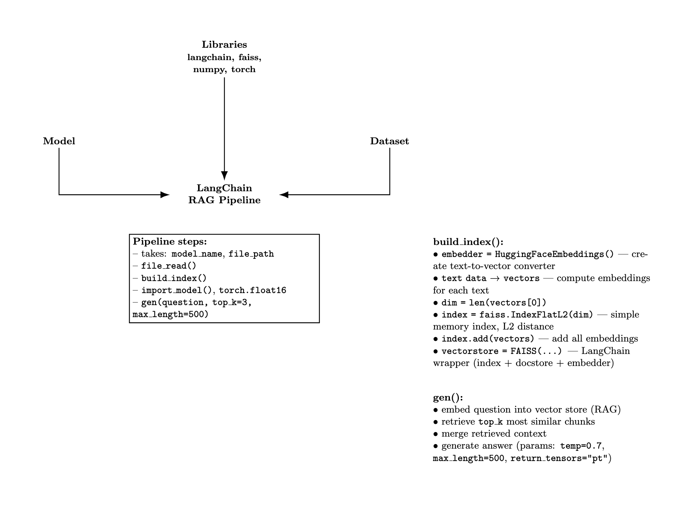

Second research paper :: Extended explanation of the qLORA structure
Full version: extended explanation of the QLoRA structure, experiments with SLMs, and cultural heritage dataset fine-tuning.
Download PDFGithub Representation
LinkIn the first research paper we delivered a prototype of a CPSS-driven system. It demonstrated how the physical, digital, and social layers could be connected into a single interactive framework.
This second study shifts the focus to the GenAI component of that system — the Large Language Model. Here the challenges revolve around prompt engineering and fine-tuning strategies that determine how reliably the model behaves in real use cases.
Our aim is to evaluate and compare two versions of the Mistral-7B model. [Why Mistral 7B? Elaborate]
The baseline setup follows a RAG pipeline with Upstash Redis, while the alternative approach applies LoRA fine-tuning on Mistral-7B using domain-specific cultural heritage data. This comparison highlights the trade-offs between retrieval-augmented methods and parameter-efficient fine-tuning.
Our goal was to see how much fine-tuning improves performance across five criteria:
- Factual accuracy
- Contextual relevance
- Safety
- Human alignment
- Formatting quality
Observations
This project was a continuation of my first research adventure — only this time we moved away from the RAG approach and dove deep into fine-tuning with QLoRA. We also wanted human feedback to play a role in evaluating the results.
What is RAG?
Retrieval-Augmented Generation (RAG) retrieves relevant external documents during inference and feeds them to the model, grounding answers in real data to improve factual accuracy and reduce hallucinations.
Why small models? Our aim was to work with SLMs (Small Language Models) for easy deployment in production, minimal infrastructure requirements, and the ability to run them in VR environments without heavy backend dependencies.
What is an SLM?
Small Language Models (SLMs) are compact LLMs with fewer parameters, making them cheaper and faster to deploy. In short — lightweight assistants able to handle domain-specific conversations without a heavy external knowledge pipeline.
Machine learning is my kind of playground — a purely applied field where building a working model means breaking a dozen others along the way, spending hours troubleshooting, and learning why certain optimizers work better, how to speed things up, and why the learning rate can make or break your model. This project was my crash course in all of that.
LoRA (base and final)
Our LoRA setup was split into two main classes, working together like an assembly line:
What is LoRA?
Low-Rank Adaptation (LoRA) fine-tunes large models efficiently by training small, low-rank adapter matrices injected into attention/MLP layers (e.g., q_proj, v_proj). Instead of updating all model weights, only adapters are learned, which makes training faster and more memory-efficient.
QLoRA vs LoRA (with bitsandbytes)
QLoRA combines LoRA with k-bit quantization of the base model via bitsandbytes (e.g., 8-bit or 4-bit). The base model is loaded in a compressed format to reduce VRAM usage, while the small LoRA adapters are trained in higher precision. In our pipeline we used bitsandbytes configuration to load the model in 8-bit (k-bit) and trained rank-8 adapters targeting q_proj and v_proj, with alpha=42 and dropout=0.05. Compared to classic LoRA, QLoRA keeps memory even tighter, enabling fine-tuning of larger models on modest GPUs with minimal quality loss.
We tested different candidates — TinyLlama, Mistral, Phi, and LLaMA — and found the last three worked best for our needs. TinyLlama was our guinea pig for quick pipeline validation thanks to its small parameter count.
All base checkpoints (TinyLlama, Mistral, Phi, LLaMA) and many datasets/utilities were sourced from Hugging Face — an open platform and community hub for sharing ML models, datasets, and training code. It provides model hubs, versioned artifacts, transformers integration, and tooling that made it easy to download, compare, and fine-tune models in a reproducible way.
RAG (base + final)
I did make an attempt to write a custom RAG pipeline using cosine similarity, but we scrapped that idea — we had less than a month for the entire project.